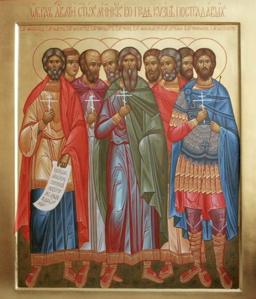

Избраннии от Царя Сил, Господа Иисуса, страстотерпцы Христовы девяточисленнии, от различных стран в граде Кизице во едино собраннии и Христа дерзновенне, мук и смерти не убоявшеся, исповедавшии, торжествуем духовне во святем празднице вашем и, воспевающе благодатную терпения вашего доблесть, молим вас, вои Христовы многострадальнии и утвержденнии в воле Христовой, и нам спасения испросите, зовущим:
Радуйтеся, прехвальнии мученицы Христовы девяточисленнии.
Яко Ангели премирнии, вознесшеся мыслию от земных к небесным, ко Христу, Владыце всех, непрестанно веры очима взирающе, мученицы святии, Руфе, Антипатре, Феогниде, Феостихе, Артемо, Магне, Феодоте, Фавмасие, Филимоне, посреде кумирослужителей града Кизического исповедасте себе безбоязненно христианы быти и, силою Божиею укрепляеми, многия муки мужественне за Христа претерпесте и под меч главы ваша преклонисте, темже, ублажающе страдания ваша и усекновение, глаголем:
Радуйтеся, земныя радости презревшии;
Радуйтеся, благ небесных возжелавшии.
Радуйтеся, исповедницы Христовы непобедимии, веру непорочну соблюдшии;
Радуйтеся, страсти Христове последовавшии и смерть Христову смертию своею подражавшии.
Радуйтеся, силою Воскресшаго державу адову поправшии;
Радуйтеся, души своя в руце Божии предавшии и победныя венцы приемшии.
Радуйтеся, прехвальнии мученицы Христовы девяточисленнии.
Видяще идолов полн сущь град Кизический, вы, о богомудренное мучеников Христовых сочетание девяточисленное, возмутистеся духом и, ревностию о Бозе горяще и благодатию Божественною укрепляеми, начасте провещавати и учити о имени Господа Иисуса, заблуждение идольское обличающе; людие же, тьмою неверия ослепленнии, взяша вас абие и связанных, аки злодеев, градскому в Кизице князю на истязание представиша; вы же стасте пред нечестивым князем и, оболкшеся во вся оружия Божия, яко воини Христовы вернии, никакоже отступисте от взбраннаго Воеводы, Господа своего, взывающе Ему: Аллилуиа.
Разумевше, яко претерпевый до конца, той спасен будет, терпением текосте, страстотерпцы Христовы, на предлежащий вам подвиг, взирающе на Начальника веры и Совершителя Иисуса, и муки и терзания телес ваших претерпели есте, радующеся и красующеся ранами, яже подъяли есте за любовь ко Господу вашему, темже:
Радуйтеся, яко Христа Господа, за ны душу Свою на Кресте положившаго, и вы, святии мученицы, взаим возлюбисте;
Радуйтеся, яко потщастеся Тому быти подобны мук терпением.
Радуйтеся, страдания и муки в торжество веры обратившии;
Радуйтеся, Христа ради излиявшимися кровьми прославленнии.
Радуйтеся, яко блаженна земля, напоившаяся кровьми вашими;
Радуйтеся, яко души своя любовию за Христа положисте.
Радуйтеся, прехвальнии мученицы Христовы девяточисленнии.
Силою Божиею укрепляемии, мученицы девяточисленнии предивнии, не убоястеся прещений зловернаго князя Кизическаго, ниже козней невидимаго князя мира сего, но свидетельствовасте о Христе Иисусе, усты вашими исповедающе Того истиннаго быти Бога, Той бо даде вам уста и премудрость, имже не можаше что противу отвещати мучитель, но посрамляшеся, истиною побеждаемый, еще же и страданьми вашими свидетельствовасте все ваше к Богу желание, и ужасахуся людие, видяще ваше доблественное терпение, и познаваху на вас силу и помощь всесильнаго Бога, Емуже взывасте: Аллилуиа.
Имуще в памяти словеса Господня: и влас главы вашея не погибнет, веровасте тако: не токмо власы, Христа ради терзаемии, цели явятся во славе воскресения, но и самое тело, раны и раздробление за Христа претерпевшее, цело востанет со славою многою. Сего ради, страстотерпцы Христовы досточуднии, верою укрепляеми и о надежде славы Божия хвалящеся, доброе течение мученическаго подвига совершисте и души своя святыя в руце Бога предасте, темже и мы возносим вам сия песненныя хвалы:
Радуйтеся, пречудное мужество явившии;
Радуйтеся, яко надеждою воскресения Христос непобедимы вас пред мучители сотвори.
Радуйтеся, яко Христос преобразит тело смирения вашего, во еже быти сему сообразну телу славы Его;
Радуйтеся, вечныя блаженныя жизни сопричастницы.
Радуйтеся, яко во светлостех святых пребываете;
Радуйтеся, яко со Ангелы песнь победную воспеваете.
Радуйтеся, прехвальнии мученицы Христовы девяточисленнии.
Мучимый за святую веру во имя Христа Господа, буря искушений и бед возшуме на тя, Феогниде, но не возможе поколебати храмины души твоея, основана бо бе на Камени, Иже есть Христос, Сын Бога Живаго; егда бо приведоша тя к князю градскому на судище, тебе, во свидетельство мучителем, ни темница, ни жестокая биения и раны не отвергоша от Христа, но, по земле протяженный и нещадно жилами биенный и ногтьми железными стружаемый, в страдании крепок и мужествен явился еси, струями же кровей своих, яко багряницею, одеявся и сердечное око к Богу вперив, воспевал еси Ему: Аллилуиа.
Слышавше грозное повеление владыки нечестиваго, да отвергшеся Христа, жертвы принесете идолом, видяще же мучительская орудия, уготованная на вы, страстотерпцы достославнии, помыслисте день втораго пришествия на землю Владыки Христа и нестерпимый гнев суда Его, егда приидет во славе Своей с небес и вси святии Ангели с Ним; сего ради, воини Христовы, неодоленнии в терпении мнозе, предастеся на раны и муки Царствия ради Небеснаго, приимите убо от нас хвалебныя песни сия:
Радуйтеся, помянувшии словеса Господня: отвергшийся Мене пред человеки, отвержен будет пред Ангелы Божиими;
Радуйтеся, внимавшии глаголанным от Христа: не убойтеся от убивающих тело, души же не могущих убити, убойтеся же паче могущаго и душу, и тело погубити в геенне.
Радуйтеся, рекшии сами себе: мучительства ярых человек временна суть, муки же геенския вечны; да избудем мук вечных, временных убоятися не имамы;
Радуйтеся, раби Христовы, вернии даже до смерти, имже воздаст Господь венец живота.
Радуйтеся, яко на страшнем судищи Господь сущим одесную сопричтет вас и части возлюбивших Его сподобит;
Радуйтеся, имже речет Царь Славы: приидите, благословеннии Отца Моего, наследуйте уготованное вам Царствие от сложения мира.
Радуйтеся, прехвальнии мученицы Христовы девяточисленнии.
Боготечная звезда, путеводящая к Солнцу Правды - Христу Богу, явился еси, святый мучениче Руфе, и светом подвига твоего страдальческаго возсиял еси людем, во тьме неверия седящим, сила бо благодати Господни в немощи твоей совершашеся. Сего ради, связанный по рукама и ногама, безчестие и поругание претерпел еси, на муки дерзнул еси и жизни не пощадил еси за Господа своего, но, жезлием и бичи узлаты жестоко биен и огнем опаляем, взывал еси к Нему велегласно: Аллилуиа.
Видевше себе в узах страждущия за имя Господа Иисуса Христа, Егоже возлюбисте и в Негоже веровасте, вы, страдальцы Христовы девяточисленнии, Духом Святым в скорби вашей и тесноте темничней утешаеми, радующеся, друг ко другу глаголасте: плоти и крови не пощадим, станем небоязненно ко всякому мучению, умрем о Христе, да во вся веки поживем с Ним, ликующе непрестанно. Темже, подвиги ваша чудныя славяще, восхваляем вас сице:
Радуйтеся, сердца ваша в руце Божии положившии;
Радуйтеся, благодати Святаго Духа избраннии сосуди.
Радуйтеся, прекрасное Духа Святаго жилище;
Радуйтеся, правду, мир и радость о Дусе Святе стяжавшии.
Радуйтеся, вечныя нам радости благоприятнии ходатаи;
Радуйтеся, Духом Владычним утвержденнии, Имже радость спасения о Господе дадеся.
Радуйтеся, прехвальнии мученицы Христовы девяточисленнии.
Проповедник Христова нас ради страдания явился еси, мучениче святый Антипатре, к столбу бо привязанный и терновными розгами биен злобными мучители, сообразен был еси Христу Господу, венцем от терния увенчану. Сего ради ко Христу взирал еси, нас ради уязвленному и поруганному, и, терпя за Него многия муки, якоже и Той претерпе за ны, воспевал еси Ему, Владыце твоему, от любве крепкия: Аллилуиа.
Возсиясте, святии девяточисленнии страстотерпцы, в граде Кизице светоч добродетелей христианских, яко светоносных звезд схождение, и просветисте нощь глубокую идолослужения. Христос бо Господь манием Своим Божественным посла вас, яко овцы посреде волков; вы же Агнцу Христу, волею закланному за мир Сыну Божию, истиннии последователие показастеся, мудростию Божиею, яже о Дусе Святе, просвещаемии, уразуместе мимоходящую жизнь и нерадисте о муках, вечныя ради жизни правую веру соблюдасте, о чесом удивляющеся, вопием к вам сице:
Радуйтеся, яко по слову Господню, мудри яко змия, мудри во благое, и цели яко голубие, прости во злое, бысте;
Радуйтеся, яко подобящеся Христу, Иже кроток бе и смирен сердцем, и вы досады и укорения кротце претерпесте.
Радуйтеся, яко в злостраданиих не противистеся озлоблявшим вас, но во смирении вашем яко овцы на заколение ведостеся;
Радуйтеся, яко добродетелем Христовым подражасте в житии своем.
Радуйтеся, агнцы, Христу себе в жертву принесшии;
Радуйтеся, ихже Христос ублажи и наследники земли живых показа.
Радуйтеся, прехвальнии мученицы Христовы девяточисленнии.
Хотя враг спасения рода человеческаго устрашити тя, небоязненнаго воина Христова, страстотерпче святый Феостихе, подвиже на гнев и ярость злочестиваго князя града Кизика, иже повеле люте мучити тя; ты же, биен быв палицами без пощадения, чрепы строган и рожны избоден, благодарил еси Христа, яко сподоби тя мучения страдати, славы ради имене Его святаго. Силою Божиею укрепляем, отразил еси совет невидимаго врага и верно воспевал еси Богу: Аллилуиа.
Дивный Христос Бог и прославляяйся во святых Своих, дарова вам, мученицы, не токмо единомудренне в Него веровати, но и ходити единомышлением в добрем исповедании Божества Его и по Нем страдати. Христос бо собра вас, пресветлое мученическое воинство, в собор мучеников един, в Церковь Бога Жива, и пребысть с вами, темже радостно приносим вам таковая:
Радуйтеся, яко и вам рече Господь во Евангелии: идеже еста два или трие, собрани во имя Мое, ту есмь посреде их;
Радуйтеся, яко и вас утеши евангельским глаголом: в мире скорбни будете, но дерзайте: Аз победих мир.
Радуйтеся, яко и вам обетова, глаголя: се Аз с вами есмь во вся дни до скончания века;
Радуйтеся, яко дадеся вам победа Господем нашим Иисусом Христом.
Радуйтеся, яко благодатию Божиею укрепляеми, противитися мучителем, паче же и всей диавольстей силе, возмогосте;
Радуйтеся, яко Христос Бог бысть вам столп крепости от лица вражия.
Радуйтеся, прехвальнии мученицы Христовы девяточисленнии.
Cтранноужасную и жестокую шествовал еси стезю, Артемо, мучеником славо, к колеси привязанный и сверху горы долу низпущенный, яко уди твои сокрушишася. Путь же твоего страдания подобно свету светится, Света Незаходимаго лучами озарен, зане на Господа взирал еси, мыслию и любовию ко Христу привязан. Христос бо Сила, Бог и Господь, Емуже взывал еси, страстотерпче: Аллилуиа.
Весь сонм ваш, мученицы святии девяточисленнии, надеястеся на Христа Бога нашего, яко имать с высоты смотрети на подвиг ваш со множеством святых Ангелов и помогати вам, немощным, будет. Верен же Бог, Иже не остави вас искуситися паче, еже могосте, но сотвори со искушением и избавление, яко возмощи вам понести, темже приимите от нас похвалы сия:
Радуйтеся, яко Бог утеши вас во всякой скорби вашей;
Радуйтеся, зане якоже избыточествоваху страдания Христова и вас, тако Христом избыточествова и утешение ваше.
Радуйтеся, яко сила Христова вселися в вы, сего ради вся возмогосте о укреплявшем вы Иисусе Христе;
Радуйтеся, яко любы Божия излияся в сердца ваша Духом Святым и дарова вам упование славы Божия непостыдное.
Радуйтеся, яко Господь Сил, Помощник в скорбех, с вами бысть, и ничтоже возможе вас разлучити от любве Божия;
Радуйтеся, яко души ваша, яко птицы, избавишася от сети ловящих и возлетеша в прекрасная селения райская.
Радуйтеся, прехвальнии мученицы Христовы девяточисленнии.
Bce тело твое уязвенно до костей имел еси, добрый страдальче Магне, егда мучитель, обнажив тя, на земли простре и бияше по хребту без милости и по чреву надолзе, таже клещами разжженными терзаше тя. Господь же, невидимою силою тебе соприсутствуя, облегчаваше болезни твоя и утверждаше сердце твое в терпении и любви Божественней, темже в муках воспевал еси Христу Богу: Аллилуиа.
Витии многовещаннии не возмогут изрещи вам достойныя хвалы, мученицы Христовы девяточисленнии, мечем бо преклонисте выи Христа ради, преклоньшаго небеса и сошедшаго, и излиясте кровь вашу, общницы Сего страстей бывше. Мы же, недостойнии, сия песненныя дары приносим вам, глаголюще:
Радуйтеся, Христос бо даде вам чашу Свою пити и крещением, имже Сам крестися, креститися;
Радуйтеся, яко пред очима суть Божиима путие и подвизи ваши.
Радуйтеся, Христа вседушно возлюбившии;
Радуйтеся, яко со Христом пострадасте, да с Ним и прославитеся.
Радуйтеся, вечную славу и одеяние нетления от Него приемшии;
Радуйтеся, яко сокровища небесная вас прияша, яко пшеницу зрелу.
Радуйтеся, прехвальнии мученицы Христовы девяточисленнии.
Спасти пришедшаго мир, любовию Сына Божия разжигаем, Феодоте мучениче, огня сильнейший явился еси. На сковраду пальну, вельми разжжену, наг возложенный, таже в клокочущий коноб вверженный, опаление и муку горькую доблественне презрел еси; от любве же Христовы никакоже разлучився, Тому пел еси умиленно: Аллилуиа.
Царю Предвечному, Христу во всем послушливи бывше, мученицы многострадальнии, от различных мест и стран в Кизице собрастеся во едино, и, во град вшедше, Христа Сына Божия, во плоти пришедшаго, проповедасте, славнии, и без страха слово Божие глаголасте. Егда же людие града Кизика благовествования Христова не прияша, вас же мукам и казням и лютой смерти предаша, вы, благовестницы Божии, исходяще оттуда не телом, но душею, не прах, прилепший вам от града, оттрясосте им от ног ваших, но бренная телеса ваша, за благовестие Христа умученная, остависте во свидетельство на ня в день судный, темже благоговейно взываем вам:
Радуйтеся, вашими христопоследовательными стопами во град Кизик шествовавшии;
Радуйтеся, Евангелия Христова благовестницы.
Радуйтеся, яко Бога воплощенна проповедасте;
Радуйтеся, яко муки, огнь и мечное усечение за Него в сладость вменисте.
Радуйтеся, яко людем, иже не прияша вы, ниже послушаша вас, во свидетельство подвига вашего, во спасение их подъятаго, телеса ваша честная остависте;
Радуйтеся, яко течение мученическаго подвига добре скончасте, веру соблюдосте, прочее соблюдется вам венец правды.
Радуйтеся, прехвальнии мученицы Христовы девяточисленнии.
Пение приносим, Фавмасие, тебе, мучениче. Душа твоя яви крепкое терпение и подвига доблесть, приложиша бо тебе немилостивии мучителие раны к ранам и болезни к болезнем, ибо ножем избождаху и резаху плоть твою, еще же и копием ребра твоя люте пронзиша. Ты же, мучениче Фавмасие, сообразен быв Христу Господу, на Кресте от единаго из воинов копием в ребра прободенному, глаголал еси, радуяся и славя Бога: Аллилуиа.
Светоприемная богосиянная свеща сущим во тьме неверия и многобожия идольскаго явишася нетленная телеса ваша, святии девяточисленнии мученицы. Егда, воцарившуся великому Константину, преста гонение и свет благочестия возсия по вселенней, тогда бо в Кизице, в храме вашем, многая чудеса и исцеления от святых мощей ваших быша, и того ради множество народа невернаго обращахуся ко Христу. Темже в похвалу вашу зовем:
Радуйтеся, яко людие града Кизика, зряще благодать Божию, в многоцелебных мощех ваших чудодействующую, прияша святую веру во Христа;
Радуйтеся, яко идоли и идольстии храми в Кизице сокрушишася, а вместо тех храми Божии воздвигошася.
Радуйтеся, подателие неоскуднии исцелений;
Радуйтеся, велия бо ваша, мученик Христовых, богоблагодатная сила, во гробех бо лежите и духи злобы прогоняете, и, яко живи, верою притекающим даете прошения.
Радуйтеся, яко чудес предивных сиянием верныя озаряете и неверныя ко Христу обращаете;
Радуйтеся, святыя бо мощи ваша яко знамя победное всем явишася.
Радуйтеся, прехвальнии мученицы Христовы девяточисленнии.
Благодать Божественная укрепляше тя в мученичестем подвизе, Филимоне страстотерпче: за ребра багром железным оцепленный и на древе ужасно повешенный, непреклонен пребыл еси во исповедании Христа и Бога, Емуже хвалебную песнь воспевал еси: Аллилуиа.
Поюще многая и преславная чудотворения ваша, восхваляем вас, всехвальнии мученицы Христовы девяточисленнии: егда бо в Кизице благовернии христиане телеса ваша, из-под спуда земнаго изъемше и нетленная обретше, в храм, во имя ваше созданный, внесоша, чудесы, яко светлыми лучами, возсиясте от святых мощей ваших. Мы же, любовию воспевающе данную вам от Бога благодать исцелений, зовем:
Радуйтеся, яко по кончине вашей чудесныя целеб источники источи Христос Бог в прославление ваше;
Радуйтеся, духов нечистых от человека прогонителие.
Радуйтеся, сляченных целителие и трясавичными болезньми одержимых всеконечнии уврачевателие;
Радуйтеся, яко воднаго труда избавися муж некий, прикоснувся честней раце мощей ваших.
Радуйтеся, яко и самим призыванием честных имен ваших трясавичный недуг отгоняется и всякая болезнь всех с верою притекающих врачуется;
Радуйтеся, добропобеднии мученицы, венцы победы от Христа Спаса нашего увенчаннии, яко страдания ваша возмеришася вам славою и честию Царствия Небеснаго.
Радуйтеся, прехвальнии мученицы Христовы девяточисленнии.
О добропобеднии и многострадальнии мученицы Христовы девяточисленнии, милостивно приимите от нас, недостойных и грешных, возносимое к вам ныне хвалебное песнословие; и, яко предстоятелие горния славы, имущии дерзновение много ко Христу Богу нашему, помяните ны, ублажающия вас любовию и чтущия ваша чудныя подвиги; испросите нам у Господа оставление грехов, в вере утверждение, в добрых делех укрепление, от бед и напастей избавление, да всегда благодарными усты воспеваем Богу: Аллилуиа.
Этот кондак читается трижды.
О всехвальнии святии мученицы, доблественнии раби Христовы, Феогниде, Руфе, Антипатре, Феостихе, Артемо, Магне, Фавмасие, Феодоте и Филимоне, иже Христа ради от различных стран собрастеся и Того совершенна Бога и Человека дерзновенно в Кизице проповедасте; принуждаеми бывше кумиром поклонитися, идолы попрасте и князя посрамисте, различных томлений и огненных прещений не убоястеся, и по различнем страдании острием меча посечени бысте, и пролиясте за Христа кровь свою, яко воду, и тою, яко багряницею, Церковь Христову, яко невесту, украсисте; темже и ныне, увенчаннии неувядаемым венцем безсмертныя славы, присно в неизглаголанней радости с лики ангельскими в небесных селениих водворяетеся, Божественным светом облистаеми и зрением Его доброты неизреченныя наслаждающеся. Сего ради и мы, смиреннии, к вам притекаем и, умильно на святый ваш образ взирающе, молим: вы молите за ны Христа Бога, яко дерзновение к Нему имущии, да вашими святыми молитвами всякаго недуга душевнаго и телеснаго избавимся. Вам бо от Бога дадеся врачебный дар от всяких скорбей с верою к вам припадающия целити, якоже и онаго славнаго мужа от трясавичныя болезни уврачевасте, да и мы, вернии, тожде получивше, почитаем вас, святии мученицы, толика дарования имущих от Христа Бога, Емуже и слава купно со Отцем и Духом Святым всегда, ныне и присно и во веки веков. Аминь.
О велицыи угодницы Божии, святии мученицы Христовы: Феогниде, Руфе, Антипатре, Феостихе, Магне, Артемо, Фавмасие, Феодоте и Филимоне! Вы Царя Христа вернии слуги бысте и подвигом добрым подвизастеся, претерпевше за Него муки; темже, по неложному Его глаголу: идеже есмь Аз, ту и слуга Мой будет, - и вы ныне со Ангелы предстоите Владыце Христу и с высоты небесныя славы призираете милостивно на храм ваш и на молящихся в нем.
Умолите убо Господа Сил Церковь Его Святую и православное Отечество наше сохранити от напастей и бед, от всех враг видимых и невидимых, низложити прелесть неверия и безбожия и стадо Христово избавити от волков, губящих е, глаголющих лукавое - доброе, и доброе - лукавое, полагающих тьму - свет, и свет - тьму; от шатания умов, яко трость, ветром колеблемых, и от греховнаго душ разслабления.
Богодарованную благодать чудес ваших, мученицы Христовы девяточисленнии, прострите ко всем нам, верою к вам прибегающим, и вся наша недуги душевныя и телесныя уврачуйте, и вся прошения наша во благо исполните.
Ей, страстотерпцы святии, молите за ны Господа, да низпослет нам Божественную благодать и дар Святаго Духа, всегда немощная врачующаго и оскудевающая восполняющаго, во еже соделовати нам спасение свое, заступлением Христа Спаса нашего, и избавитися нам от сети вражия и грехов, и помиловатися душам нашим, да и мы купно с вами и всеми святыми прославим Бога, в Троице славимаго, Отца и Сына и Святаго Духа. Аминь.
Святии девяточисленнии мученицы, молите Бога о нас.
Святии девяточисленнии мученицы, от различных градов во един лик совокупившеся манием Божественным, мужественно за Христа пострадасте, невидимаго врага победисте, зловерныя князи и мучители посрамисте вашим терпением, огнем же любве Божия разжизаеми, вещественно вас огнь мучащий во хлад преложисте, темже дадеся вам от Христа Бога благодать трясавичную исцеляти болезнь, от неяже и многовидных страстей милостивно спасайте и нас предстательством вашим, молимся.
Твердый и всесветлый лик мученик девяти, Трисолнечнаго Божества исповедницы, на судищи Тому начально взываху: кровь и души наша с телесы, яко непорочную жертву, приносим Тебе, Владыко: в лицех небесных Твоих сопричти, яко Бог Милостивый.
Величаем вас, святии девяточисленнии мученицы, и чтим честная страдания ваша, яже за Христа претерпели есте.
☧